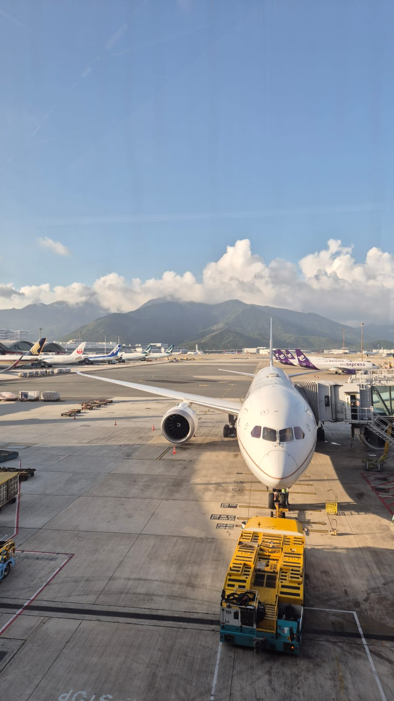
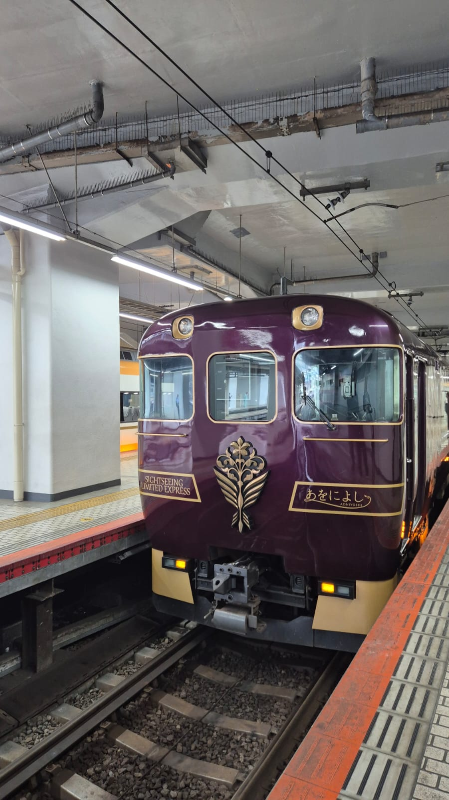

Stay
Three hotels, one rule: near a metro
- TokyoCandeo Hotels Ueno KoenNear Uguisudani, on the Yamanote line, which links all the major stations.
- KyotoHotel M's Est Kyoto Station SouthSouth of Kyoto Station, within 300 m of a metro stop.
- OsakaHotel The LutheranThe roomiest of the three.
How I chose
- Value for money, checked on Agoda, Booking.com and Google reviews.
- Slightly away from hotspots like Shinjuku and Shibuya.
- Every hotel within 300 m of a metro station.
- Rooms were compact, but all had windows.
Good to know
- Check-in 3 PM, check-out 11 AM. Staff kept our luggage after check-out, so I did not need a luggage-forwarding service.
- Kyoto charged a tourist tax, paid separately at the hotel (about ₹1,500 for two).
- All bookings were refundable, and that paid off.
Getting there
Flights, layover and arrival

- Flights: Delhi to Hong Kong to Tokyo Haneda on Cathay Pacific, and back from Osaka via Bangkok on Thai Airways. About 12 hours with the layover, about ₹75K per person, partially refundable.
- Layover: Hong Kong gave us 2 hours, and the whole process took 45 minutes at most.
- Before landing: fill in the Visit Japan Web form (opens in new tab) and tick the Tax-free QR box.
- To the hotel: I bought a Suica card from a vending machine at the airport and took the train. Trust Google Maps for the train, platform and time.
Around Japan
Trains, mostly
| Route | How | Note |
|---|---|---|
| Tokyo to Kyoto | Nozomi Shinkansen | Booked at a machine 20 minutes before. Trains run every 15 to 20 minutes. Needs the base fare plus a limited-express ticket. |
| Kyoto to Osaka | JR Special Rapid from Kyoto station | Suica only. |
| Osaka to Kansai Airport | Airport-bound train | Suica only. |
| Hakone and Mt Fuji | Guided day tour (GetYourGuide (opens in new tab)) | About ₹5,000 per person. |
| Kamakura | Train from Tokyo | About 1 hour. |
| Nara | Aoniyoshi limited express (opens in new tab) | About ₹450 per person on top of the base fare, which I paid with Suica. Book ahead. A normal train also works. |
I used Suica in Tokyo, Kyoto and Osaka. No other tickets were needed except for the Shinkansen.

Money & SIM
Staying connected and paying
- eSIM: one eSIM from trip.com, shared between us by hotspot. 10 days, 3 GB a day, ₹1,200 in total. A Hong Kong eSIM for the layover was ₹70.
- Cash: some local shops and tourist spots still only take cash. I withdrew at 7-Eleven and FamilyMart ATMs.
- Card: I used a debit card for most spending, which made it easy to track and cap what I spent. The drawback is a conversion fee plus GST.
- Suica: load it in ¥10K batches. In my experience a physical card takes only cash at machines, not a credit card. Mobile Suica works differently, so check the current rules.
Prices are what I paid in September and October 2026. Check current information before you plan.